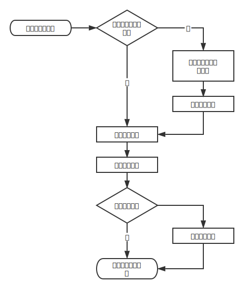

实战
手机日历组件
@meathill
关于作者

大家好，我是翟路佳。全栈工程师，编程爱好者。
经常出没于：
教学目标
通过学习本系列教程，可以了解现代化前端开发的方方面面：
- 学会搭建开发环境，使用 Webpack、Babel、Stylus、Gulp 等工具
- 了解测试驱动开发，学会写测试用例、自动化测试
- 学会打包发布代码
- 学会用 GitHub Pages 维护产品文档
- 学会写类似的组件
课程大纲
- 项目启动 & 需求分析
- npm & package.json
- Stylus
- 静态 HTML 开发
- Webpack + Babel 配置
- 使用 ES6 开发 JavaScript
- 使用 Mocha + should.js 测试
- 使用 Handlebars 处理模板
- 完成 UI 开发和测试
- 使用策略模式解决分支需求
- Gulp 打包
- 配置 Webpack 适应不同环境的打包
- 使用 Weinre 解决微信下的问题
- 使用 GitHub Pages 搭建文档网站
- 回顾，总结
第一讲
- 项目启动 & 需求分析
- NPM & package.json
- Stylus
- 开发静态 HTML
需求分析

- 开发一个日历控件
- 主要在手机浏览器中使用，包括公众号
- 点击日期输入框，弹出控件，选择日期，收起控件
- 尽量独立，少依赖，少引入框架
- 样式如图
通用规则
- 今日用黄点标记
- 不可选的日期为灰色
- 打开关闭都需要动画
- 周末用橙色标记
- 可以指定某个日期为橙色（端午节、清明节等）
- 向上滚屏可以自动增加下个月
- 可以用参数配置
选择单日
- 点击日期视为选中
- 点击同一日期视为取消
- 点击其它日期视为多选
- 若自动提交，点够数量就提交
- 不自动提交，右上角有提交按钮，点击后提交
选择多日
- 第一次点击时，视为选择时间段的一端，第二次点击为选择另一端
- 允许用户先选择终点，再选择起点
- 若自动提交，第二次点击后，控件伴随着动画关闭
- 不自动提交，第三次点击会清空之前的选择，并重新选择起点
技术选型
- 开发效率
- 使用效率
- 维护成本
jQuery
- 事件代理
- 创建 DOM
- 简单的 DOM 操作
模板引擎 Handlebars
- 预编译
- 比较熟
Stylus -> CSS
- 使用预处理工具，方便开发
- 简单方便快捷，基于 Node.js
- 支持变量、函数、循环
- 丰富的内建函数
语言
- ES6 Class
- Webpack + Babel
- 完整的测试用例
提交物料
- 最终文件 CSS、JS 各一个
- 源代码
- 使用文档
这套方案的优势
- 使用比较简单，嵌入资源文件即可
- 使用 jQuery，前后兼容性好，对方容易接手
- 源代码保持最大的弹性，方便扩展开发
工作流程
- 将事件绑定在
<body>上 - 配置信息使用
data-*写在<input>上 - 用户点击
input[type=text].tqb-date-picker后- 如果此文本框尚无日历元素
- 则生成一个元素并绑定
- 弹出日历窗口
- 用户点击后选中日期

开工！！
0. 准备阶段
- 安装 node.js
- 安装 Stylus
1. 初始化项目
NPM
Node Package Manager = Node 包管理工具
- 管理依赖
- 发布我们自己的包
- 记录常用脚本
package.json
此项目的配置信息，可被 NPM 读取。
- 版本、内容、作者等描述
- 依赖：运行时依赖 & 开发时依赖
- 可执行脚本
2. 配置 Stylus
3. 开发静态 HTML
Q&A
完整项目代码仓库：
参考阅读：